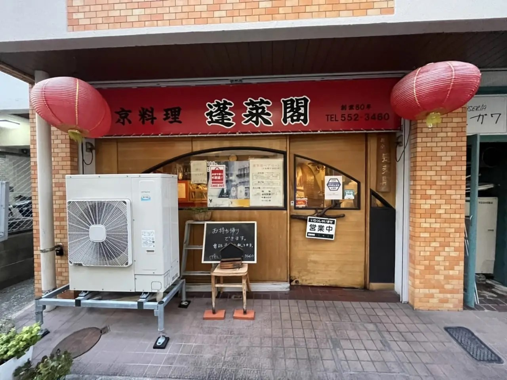

<style>
    main div{
        width: 80%;
        border: solid 1px red;
        padding: 5px;
        box-sizing: border-box;
    }
    .map{
        width: 40%;
    }
    .address{
        width: 40%;
    }
    .container{
        display: flex;
        justify-content: space-around;
    }
</style>

<main>

    <div>
        蓬莱閣
    </div>
    <div>
        
    </div>
    <div class="container">
        <div class="address">
            住所情報 <br>
            　〒815-0035 <br>
            　福岡県福岡市南区向野2-1-8 ロワールマンション大橋 1F <br>
            　TEL　092-552-3460
        </div>
        <div class="map">
            Google Mapのリンク
        </div>
    </div>
    <div>
        店舗メニュー
    </div>
    <div>
        <div>豚肉天ぷら定食　￥780</div>
        <div>麻婆豆腐定食　　￥780</div>
        <div>レバニラ定食　　￥880</div>
        <div>からあげ定食　　￥780</div>
        <div>焼肉定食　　　　￥880</div>
        <div>担々麵　　　　　￥500</div>
    </div>
    <div>
        日赤通りの、九州中央病院から斜め向かいにあるセブン-イレブンから小路へ曲がったところにあります。見つかりづらい場所にありますが、知る人ぞ知る、昔ながらの名店「町中華」創業80年！　老舗中華料理店
        麺類やスープ、飯餃子類、定食メニュー揚げ物や炒め物メニューや、ドリンクメニューもある。
    </div>
</main>